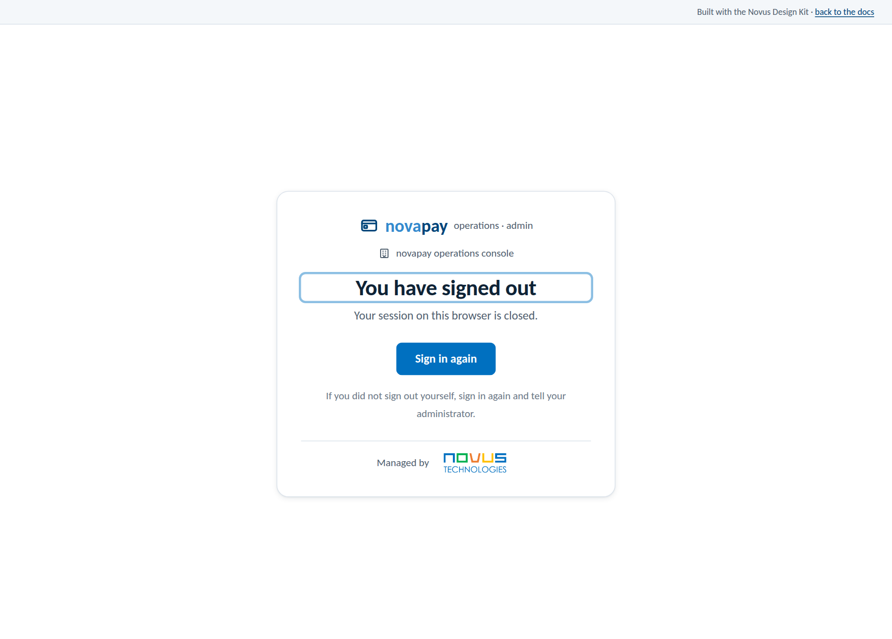
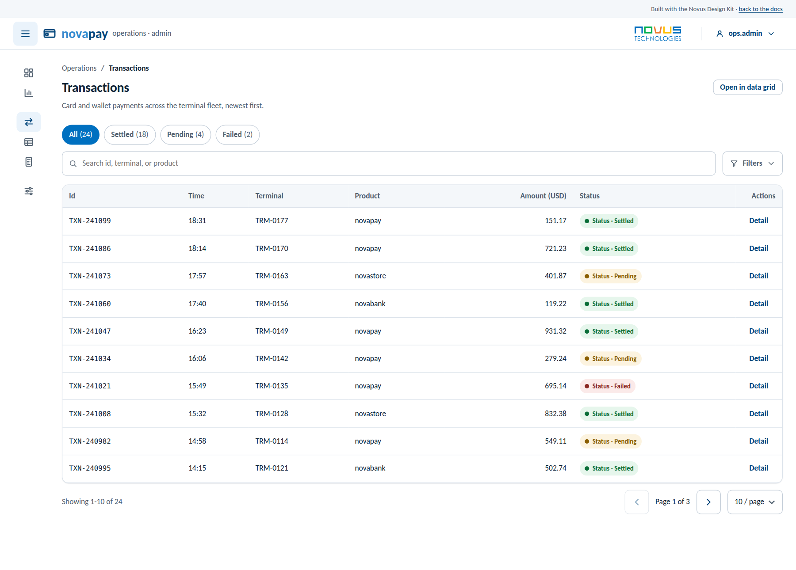
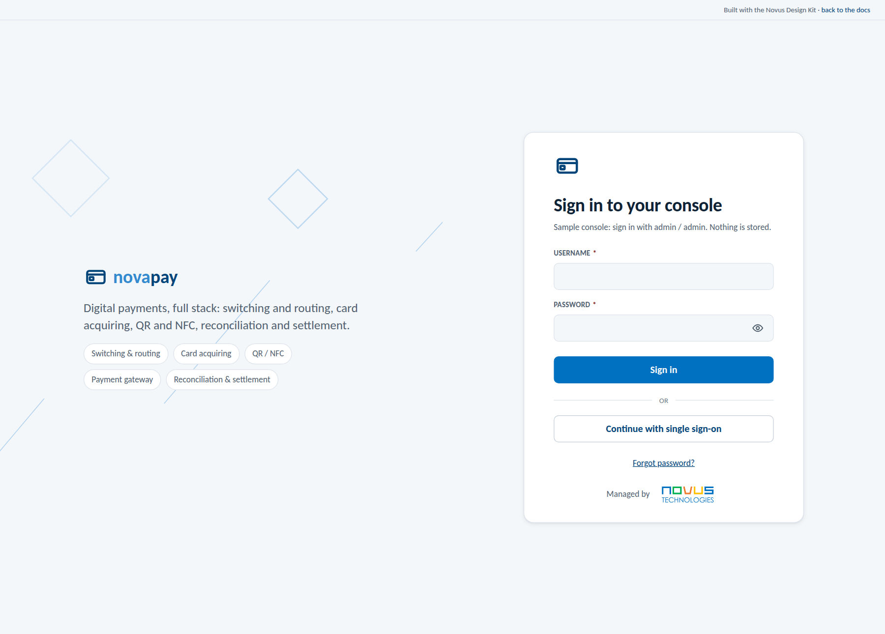
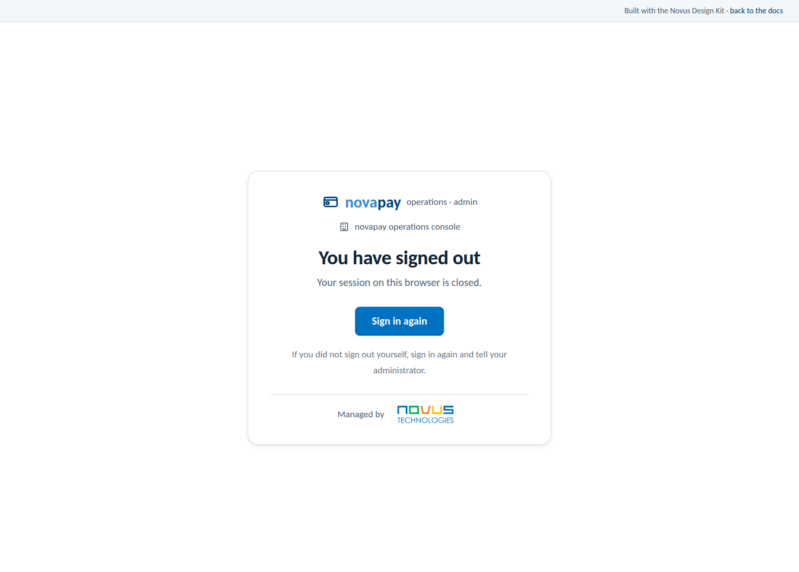
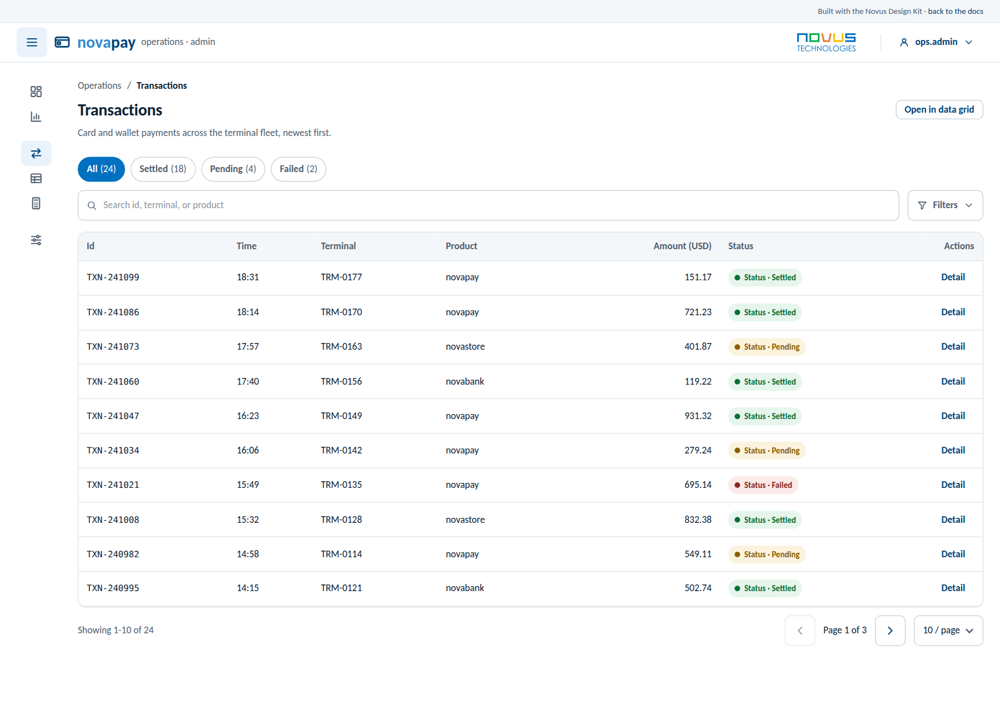
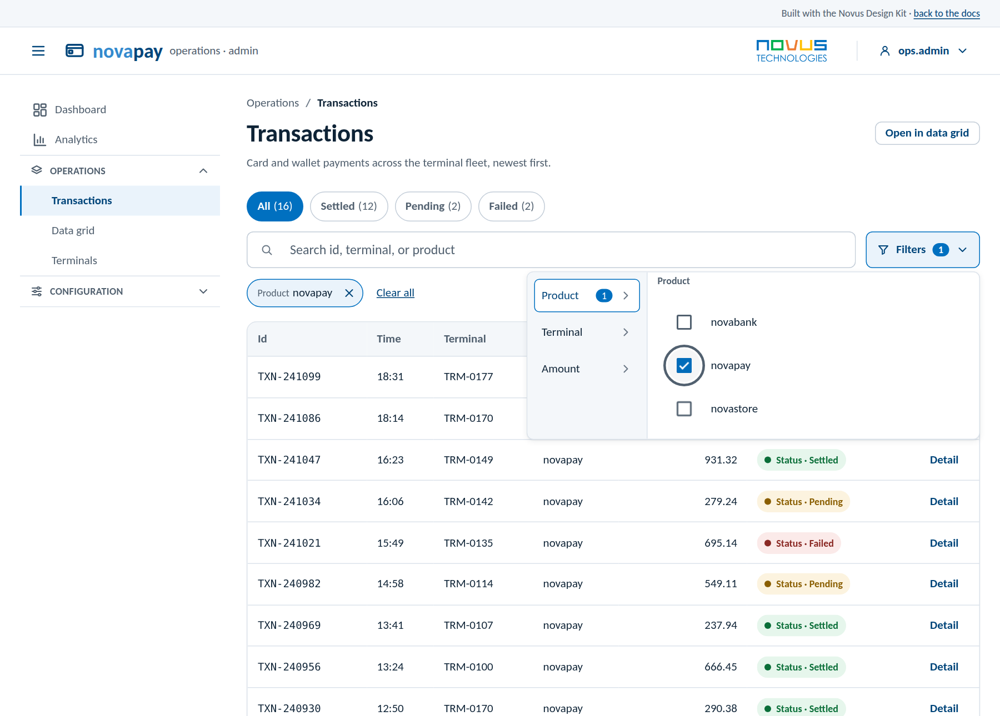
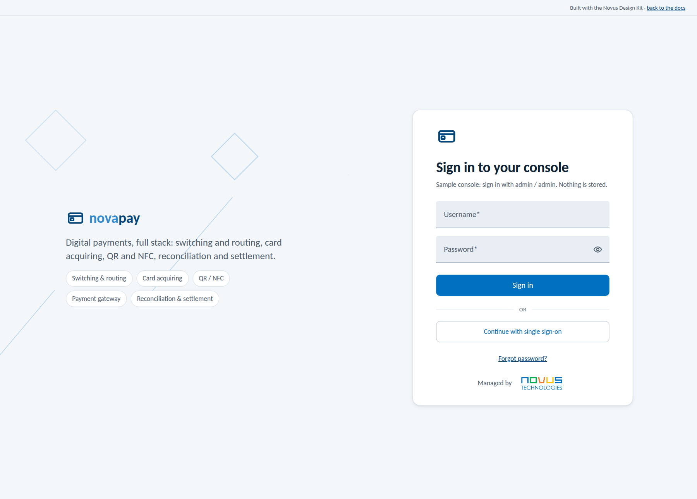
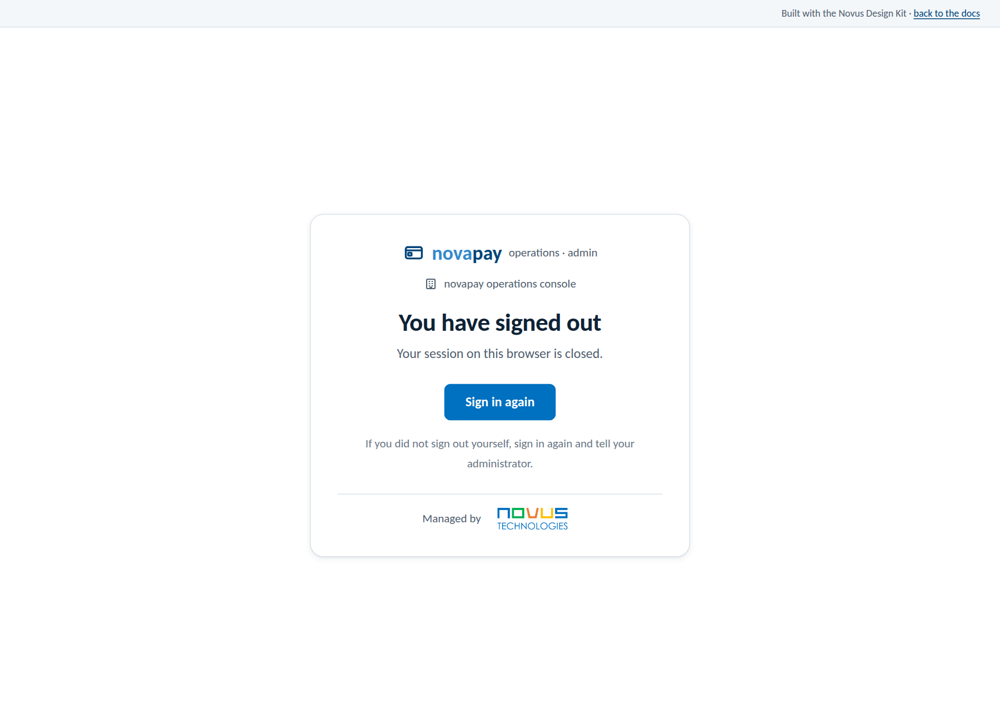
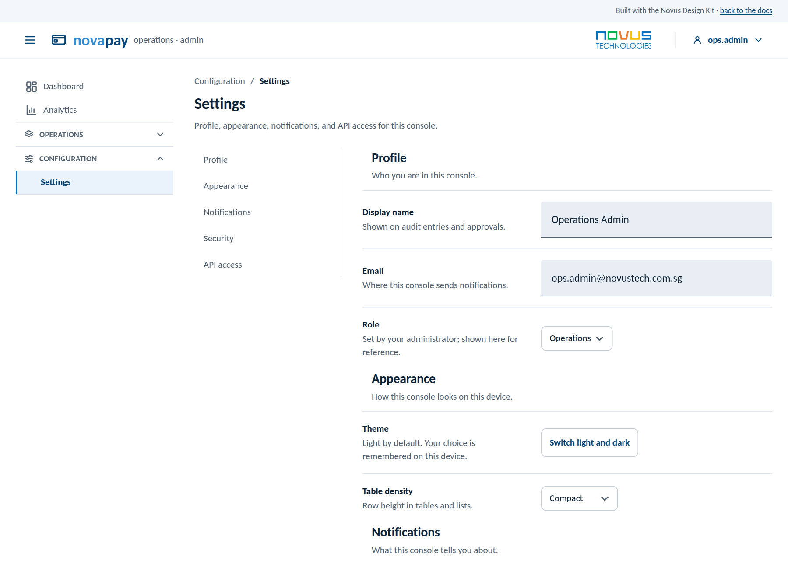

A complete, realistic enterprise starting point built on the design kit: a novapay
operations console with a sign-in page, a dashboard, a filterable transactions list,
a data grid, a terminal fleet view, settings, and a signed-out page, built on the
console patterns from the novalending reference: split sign-in, grouped side
navigation with a drawer on phones, page headers with breadcrumbs, a filter bar with
a sub-filter sheet, list footer pagination, and single-line content everywhere. It ships in three flavors with strict screen parity (Blazor, Tailwind, and
Material Web), all consuming the published novus-design-kit package. Copy a flavor folder
from the repository and start from a working, on-brand application.
Two ways in, depending on where you are starting from. Both flavors pull
novus-design-kit from the public npm registry: no tokens, no registry
configuration.
Each flavor folder is a complete, runnable application. Get the repository, copy the folder you want, and it becomes your project.
# get the repository (any of these)
git clone https://github.com/novustechdev/novus-design-ui.git
gh repo clone novustechdev/novus-design-ui
# or download the ZIP from https://github.com/novustechdev/novus-design-ui
# (Code button, then Download ZIP) and unpack it
# take a flavor folder as your starting point
cp -r novus-design-ui/admin-kits/tailwind my-console # Vite + Tailwind flavor
cp -r novus-design-ui/admin-kits/material my-console # Vite + Material Web flavor
cp -r novus-design-ui/admin-kits/blazor my-console # Blazor Server flavor
cp -r novus-design-ui/admin-kits/data my-console-data # optional: the shared dataset generatorThen run it. Tailwind flavor:
cd my-console
npm install # pulls novus-design-kit and d3
npm run dev # develop; npm run build for the production bundleBlazor flavor (.NET 10 SDK required):
cd my-console
npm install # pulls novus-design-kit; the build copies it to wwwroot/lib
dotnet runnpm install novus-design-kit d3novus-design-kit/tokens.css and the pre-paint theme script novus-design-kit/js/novus-theme.js first, exactly as your framework guide shows.novus-design-kit/console.css and novus-design-kit/js/novus-console.js and you have the sign-in page, shell, side navigation, page header, user menu, filter bar, list footer, settings layout, chart styling and the content-fit rules. See Install.novus-chart.js beside them.admin-kits/data/; node generate.mjs re-emits every flavor's data, shared layer copies, console shell, icons, and the WebAssembly demo mirrors, and node generate.mjs --check fails when any copy has drifted (a release gate).Blazor Web App (.NET 10): server-rendered pages, InteractiveServer only on the transactions filters and data grid; the sign-in page is a static server-rendered form post that works with JavaScript off. Verified 2026-09-23; screenshots below are from the verified run, and every image opens the live demo. The hosted demo is a WebAssembly build (requires JavaScript); the copyable flavor is server-rendered and works without it.
# copy admin-kits/blazor from the repository, then
npm install # pulls novus-design-kit; the build copies it to wwwroot/lib
dotnet run

Vite multi-page app with Tailwind utilities mapped to the Novus tokens (the verified theme-guide pattern); vanilla JS only for the filter, dialog, and toggle. Verified 2026-09-23.
# copy admin-kits/tailwind from the repository, then
npm install
npm run dev # or: npm run build && npm run preview







Vite multi-page app on Material Web (@material/web 2.5, the official
m3.material.io web components) under the Novus tokens: MD3 system tokens map to the
kit variables in one CSS file (the verified Material
Web theme guide pattern), so dark mode flips the whole component set with no
extra code. Buttons, text fields, selects, and checkboxes are Material Web
components; layout, chips, and charts are the kit's. Material Web components
require JavaScript. Verified 2026-09-23.
# copy admin-kits/material from the repository, then
npm install
npm run dev # or: npm run build && npm run preview








admin-kits/data/dataset.json) and one shared layer (admin-kits/shared/) generate every flavor's data, console shell, icons, and filter markup; node admin-kits/data/generate.mjs --check proves parity and runs as a release gate.